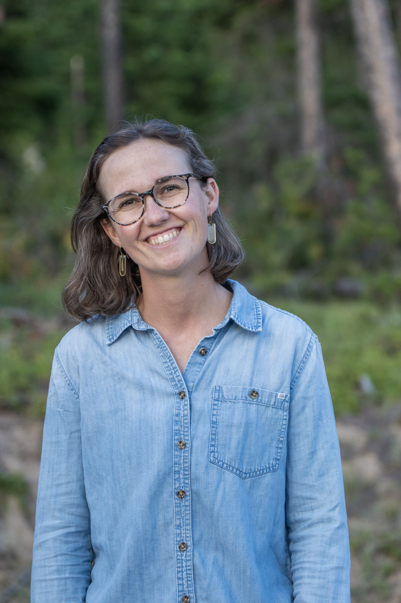

About
Abi Fuesler is a Ph.D. student in Forest and Conservation Sciences at the University of Montana and a research assistant in the Wildland and Recreation Management (WARM) Research Lab, led by Dr. Will Rice.
Her path to research ran through the deserts of Southern California and the mountains of western North Carolina: first as a camper, then a summer camp director, and eventually a graduate student in Experiential & Outdoor Education at Western Carolina University. Her thesis examined how graduating from an undergraduate outdoor academic program shapes alumni lives and careers.
Today her work centers on recreation allocation: the systems that decide who gets access when demand exceeds supply to a recreation area. She is also drawn to questions about the social scripts of outdoor adventure, particularly as they relate to the rise of the e-bike. When she steps away from the work, she can be found reading or riding bikes.

Research
When visitation climbs, managers may ration access through permits, lotteries, and advance reservation systems. How should these opportunities be shared fairly and efficiently, and what do visitors themselves prefer?
Unwritten rules shape who belongs outside and how people behave there, from the arrival of the e-bike to the meaning of alcohol use in recreation. How do these cultural scripts form, and who do they quietly include or exclude?
Outdoor academic programs promise to shape lives long after graduation. How does the experience of earning this degree echo through the careers alumni go on to build?
Publications
In the Field
Field Notes